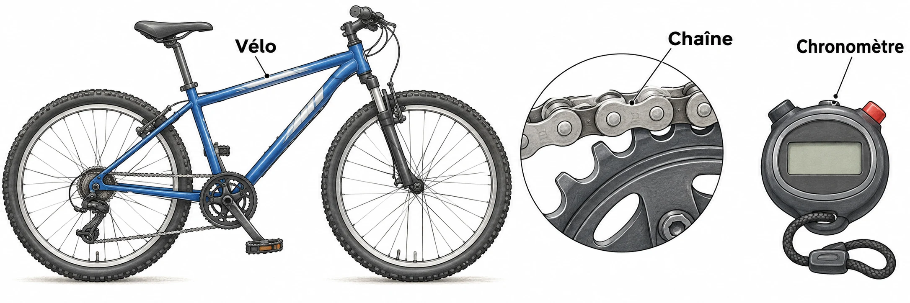

OBSERVER · EXPÉRIMENTER · EXPLIQUER
Le vélo transmet le mouvement
Fais tourner l’entrée de trois mécanismes. Observe ce qui bouge à la sortie.

✎ Garde ta feuille à côté de toi.Ordinateur : manipulations et mesures simulées. Papier : relevés, réponses, calculs et croquis.
Sur ta feuille
Garde tes réglages, tes résultats et tes explications dans l’ordre des questions.